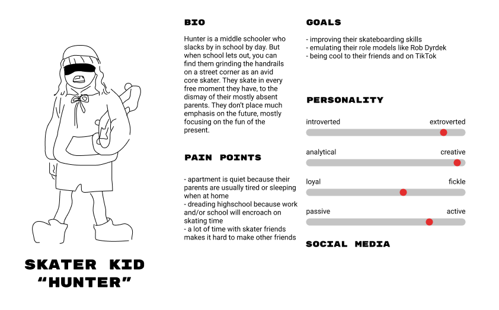
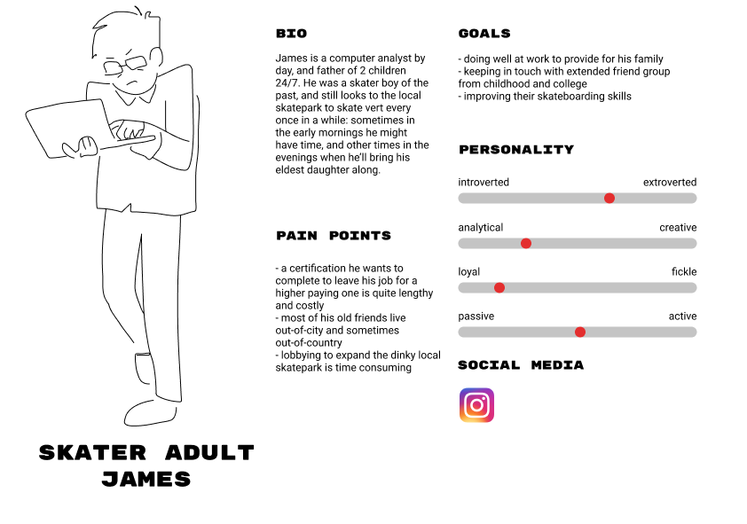
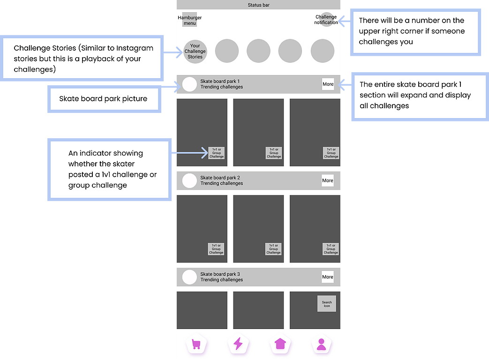
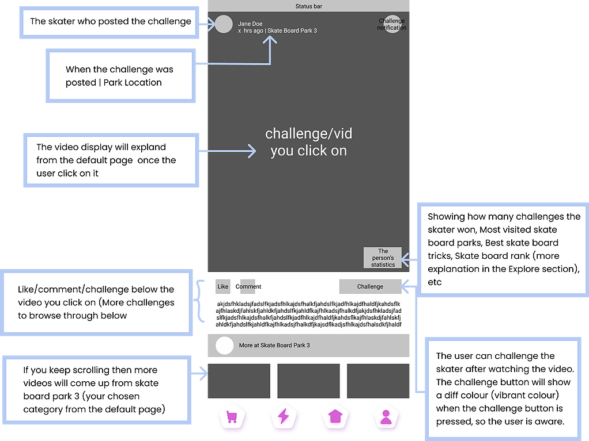
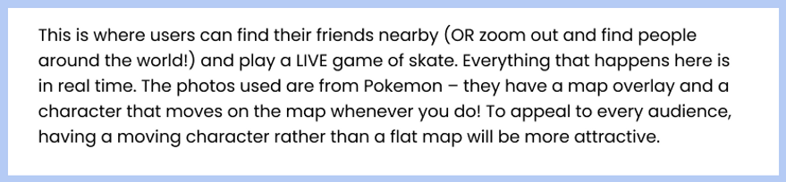

S.K.A.T.E.
A mobile app made for skateboarders
The Project
S.K.A.T.E. is a social media mobile application that I created as a part of my User Experience Design course at the University of Waterloo. As the UX designer, I designed the project from inception to final design through research, ideation, and UX design principles.
Duration: 3 months
Methods:Secondary Research, Competitive Analysis, User Persona, Interviews, Surveys, Wireframes, Mockups, Prototypes, Thinking Aloud Testing
Tools:Adobe XD, Figma
About the App
Skateboarders around the world have spent years honing their skills and building an international community. However, every skateboarder is limited in their own way, whether it be physical, financial, or environmental. Thus, SK.A.T.E. is invented to help connect skateboarders with any background to skate, share, and teach each other new skills anytime and anywhere.
Competitive Analysis
Hua Ban Quan App
- Provides a teaching function that helps new skateboarders to learn basic knowledge and tricks of skateboards.
- Receive likes and comments from others.
- Features the biggest e-commercial website in China in their online store, Taobao.
SkateYou
SkateYou is a freeskateboard social media app for global skateboarders. It has the largest skateboarding database with 30 000 skate locations worldwide, including parks, sports, and shops.
Home Page
- Daily skateboard posts
- Participates in any online challenges on the “Tasks” page to win prizes
Profile Page
- Chat with friends and see comments
- Follow other skateboarders who have the same interests
Likes & Comments
- Makes this app a social media app
Global Page
- provides location for skate spots, parks, and shops through its GPS function
- not limited to certain countries.
Nike SB App
Nike SB App was created by Nike in 2013 for skateboarders worldwide.
- Meet up with their peers and earn reputations for each other with features like video posting, challenges, and create their skate history
- Features a multi-angle video learning platform
- Cross head-to-head in virtual video games of S.K.A.T.E. and get exceptional entry to live-streamed Nike pro occasions
Findings
Finding #1
Sharing the same goal
There are many apps for skateboards, but most of them are created for skaters who want to find a good place to skate or connect with other skateboards
Finding #2
Strong sense of community
The community page is a prominent feature in every skate app. One of the similarities shared across all the skateboarding apps is the community aspect. Skate apps that establish a well-built community receives higher ratings as well.
Finding #3
Male-targeted user interface designs
There are very few colors and the content organization is narrow, condensed, and orderly in most of the existing skateboarding apps.
User Personas
Skater Kid
Skater Adult
Interviews & Surveys
With the help of several skate park owners, interviews were conducted with skateboarding amateurs and experts from the age of 10 to 40s.
Goal
With the help of several skate park owners, interviews were conducted with skateboarding amateurs and experts from the age of 10 to 40s.
Out of the 8 participants, about 21% are in the age group of 10 to 15, 78% in the age group of 16 to 25, and 1% in the 30+ age group.
Insights from interviews and surveys
Insight #1
Skate culture = Counter culture
Many participants noted that skating is about self-expression, risk-taking, and freedom. They emphasized it as a way to express every facet of oneself, including political ideals and ethical/moral values.
Insight #2
The importance of location
Locations and environments are crucial parts of a skateboarder's identity and culture.
Insight #3
Community, community, and community
The community aspect of skateboarding culture was heavily emphasized and discussed by participants during the interviews.
"If you talk to local skateboarders, you will see people dedicated to building bonds within their coterie, mentoring youth, and engaging the larger local community.."
Insight #4
Supporting local skate shops
People should start purchasing their skateboarding equipment at local stores instead of online. Having a skate shop locally helps to keep people interested in skating which spawns new skaters. It can also help with getting local skate parks built.
"My advice is to try to support the local shop. They're a big part of our culture. Without them, we'll be losing a huge part of what skateboarding is. A skate shop is a place for local skaters to meet. It is not just a place to buy things. It is in a way a community center for the local skateboarding scene."
Wireframing, Mockups & Usability-Testing
Home Page
Post Page
Profile Page
Local Shop Page
Explore Page
Live Game Page
Usability Test
To ensure that the app was built appropriately and was accessible for skaters, the usability test included the app's stakeholders and skateboarder experts. Several vulnerabilities were identified in the structure of the user interface.
Adjustments
Adjustment #1
Navigation bar
An indicator should be included to show users which page they are on.
Adjustment #2
Asynchronous games
The live game aspect of the app was originally inspired by Pokemon GO, wherein the user can see all the local skateparks on an overlay map. They would be able to play games of SKATE with their friends live and challenge “kings of the park” (users who have won the most SKATE points at a certain location). However, those who don’t have the luxury of a data plan are not accommodated. To solve this issue, users can post skate tricks and ask to be challenged on a feed, and other users who see it will be able to accept/decline the challenge. These games would take place asynchronously and may last for a couple of days. This way, people with different time zones may also play with each other!
Adjustment #3
Local shop page
Connecting users with local skate shops should be the priority instead of product sales. Consider providing coupons or gift cards that would encourage users to visit and support local skate shops instead.
Outcome & Prototype
From understanding the Canadian skate culture to researching different online skateboarding apps and how skateboarders communicate online, I have begun to understand what skate culture is, and thus, what kind of product fits the skater's values.
If there was more time available...
- Forging partnerships among local skate shops, initiatives, and groups for a more in-depth usability testing
- Distributing collectible items (like a sticker or pins) done by local artists at each skate shop location in partnership with the app.
- Choosing an appropriate revenue model for the app
More Projects...
Soup Surreal
Front-end Developer
Redesigning a local soup shop's website according to research results.
View Case StudyWatRides
UX Designer
A carpooling app designed to solve the Stratford campus' transportation issues.
View Case Study